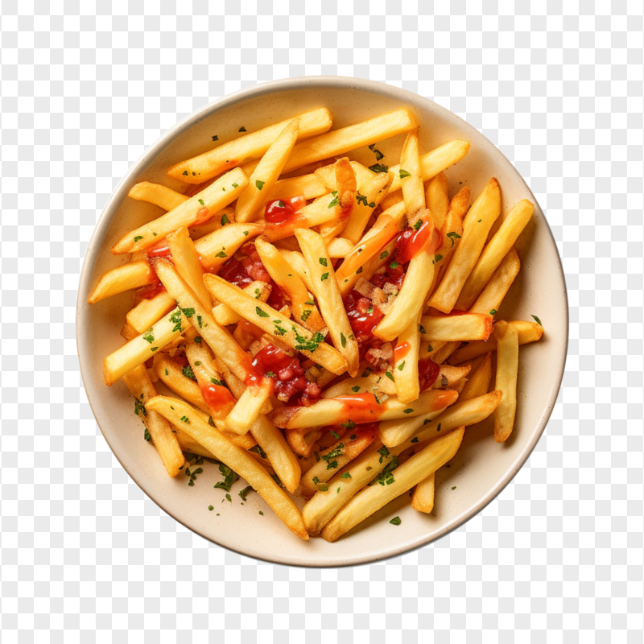

Macedonian pomfrit:

But what is Macedonian Pomfrit?
Macedonian pomfrit is something traditional, it is very simple to make as you will soon see, but dont be deceived by its simplicity, macedonian pomfrit is the most delicious dish of fries you will ever try!
Ingredients
-
Frying pan We need a frying pan as macedonian fries are fried not baked.
-
Sunflower oil Macedonians generally use sunflower oil as a staple for all foods, you could fry it with something else but sunflower oil gives a distinct taste to the fries that you wont get with something else.
-
Fresh natural potatoes Try to get natural white potatoes, they are da best!
How to make the Macedonian Pomfrit!
-
Put the pan to heat up Let the pan heat up for a minute
-
Put the sunflower oil in the pan Now that our frying pan is warm, put the sunflower oil inside, it should generally be filled 1 to 2cm, not too much but not little, we want it be generally filled, use your best judgement
-
Cut the firesWhile we wait for the sunflower oil to get hot, cut your fries, they should be long and medium in width, do the best job you can, Macedonians use a knife to do this, traditional, although you can get modern if you want!
-
Put the fries inside Once the sunflower oil is heated up and your fries ready, put the fries inside, make sure to stir them every 2-3 minutes, it will take about 20-30 minutes for them to fry, they should be crispy but not brown or burned, white white some crips on the side!
-
Enjoy!If you did all steps above correctly, they will be the best fries you have ever tried, nice and crispy with a beatiful white color, just right! Check out our other recipes if you liked this one and we know you did haha! :) (hopefully)
Home